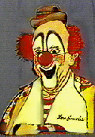

Carve your name
Carve your name in ice and wind
Search for where
Search for where the rivers end
Or where the rivers start
Do everything that's in you
That you feel to be your part
But never give your love, my friend,
Unto a foolish heart
Leap from ledges
Leap from ledges high and wild
Learn to speak
Speak with wisdom like a child
Directly from the heart
Crown yourself the king of clowns
Or stand way back apart
But never give your love, my friend
Unto a foolish heart
Shun a friend
Shun a brother and a friend
Never look
Never look around the bend
Or check a weatherchart
Sign the Mona Lisa
With a spraycan, call it art
But never give your love, my friend
Unto a foolish heart
A foolish heart will call on you
To toss your dreams away
Then turn around and blame you
For the way you went astray
A foolish heart will cost you sleep
And often make you curse
A selfish heart is trouble
But a foolish heart is worse
Bite the hand
Bite the hand that bakes your bread
Dare to leap
Where the angels fear to tread
Till you are torn apart
Stoke the fires of paradise
With coals from Hell to start
But never give your love, my friend
Unto a foolish heart
Unto a foolish heart....
First performance: June 19, 1988, at the Alpine Valley Music Theatre in East Troy, Wisconsin. "Foolish Heart" opened the second set, and was followed by "Playing in the Band." The song remained in the repertoire thereafter, most often appearing in the second set, following "Victim or the Crime."
"Out of the mouth of babes and sucklings hast thou ordained strength because of thine enemies, that thou mightest still the enemy and the avenger."You can find this expression in all sorts of places, particularly as a genre of jokes or humerous anectdotes, where the expression has come to mean inadvertant truth or humor.
And, most cosmically, in Star Trek: The Original Series, the epidode entitled A PIECE OF THE ACTION contains the following dialog:
Kirk: "Out of the mouths of babes..."
Young Man: "Who you callin' a babe?"
Kirk: "I'm calling you a babe... but don't take it personally."

A famous clown named Lou Jacobs billed himself "The King of Clowns". Jacobs was born in 1903 and died in 1992. He joined Ringling & Barnum & Bailey Circus in 1925. There he created one of the most famous clown gags ever...the midget car.Also, the expression 'going around the bend' is idiomatic for going crazy.
"And having looked to Government for bread, on the very first scarcity they will turn and bite the hand that fed them."
"Here's a half a dollar if you dare
Double twist when you hit the air"
"The bookful blockhead, ignorantly read,
With loads of learned lumber in his head,
With his own tongue still edifies his ears,
And always list'ning to himself appears.
...
No place so sacred from such fops is barred,
Nor is Paul's church more safe than Paul's churchyard:
Nay, fly to Altars ; there they'll talk you dead :
For Fools rush in where Angels fear to tread."